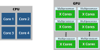
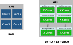
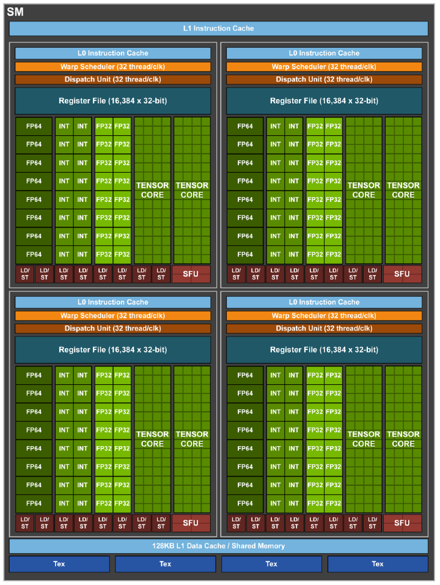
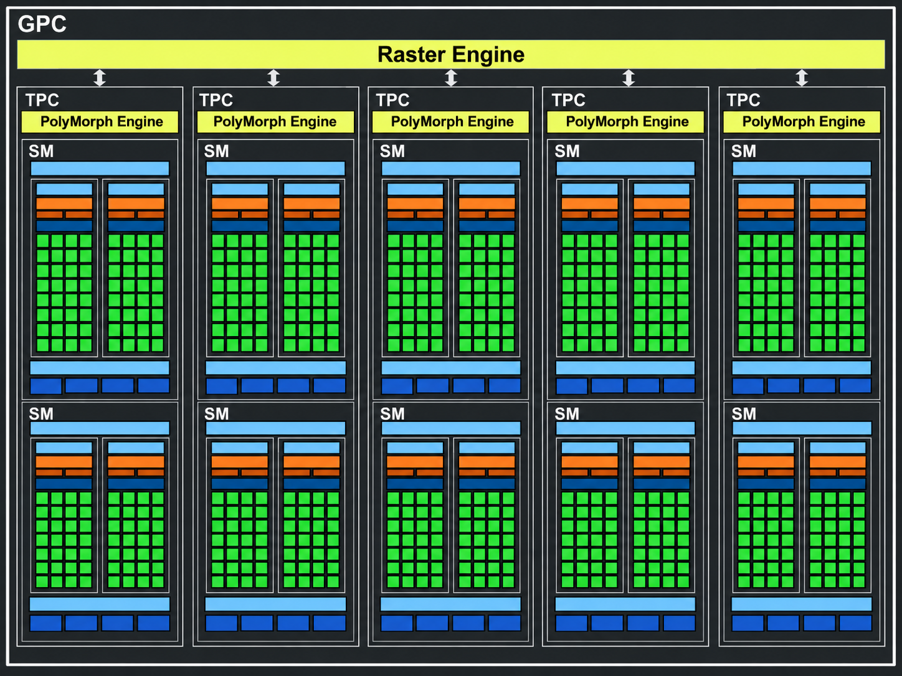

GPGPU
Bonjour
Et bienvenue dans ce merveilleux cours
L’objet du cours
General-Purpose computing
on Graphics Processing Units
(GPGPU)
On va essayer de comprendre ce que c’est et de l’appliquer
Le programme des 4 CM
- CM1 — Pourquoi le GPU ? Architecture et premier kernel
- CM2 — Exécution : SIMT, subgroups, divergence, synchronisation
- CM3 — Mémoire et algorithmes parallèles
- CM4 — Mesurer, comprendre et optimiser les performances
Tout d’abord une question importante
L’évaluation
L’évaluation
66 % écrit questions conceptuelles
ET
33 % projet Break the GPU
Le projet
Vous aurez l’occasion de relever un défi :
Break the GPU
Think Parallel. Make It Scale. Push the Limits.
Le sujet ? Libre !
La contrainte ? Exploiter et repousser les performances du GPU.
Break the GPU
Choisissez un problème qui vous intéresse.
Quelques pistes
- Traitement d’images et rendu
- Simulation physique
- Cryptographie et cybersécurité
- Calcul scientifique et analyse de données
- Ou toute autre idée !
Votre mission
- Concevoir un algorithme parallèle
- Le faire fonctionner sur GPU
- Mesurer ses performances
- Identifier les limitations
- Optimiser et recommencer !
WebGPU recommandé, autres technologies autorisées.
Tout le cours vous préparera au projet
Les CM comprendre comment fonctionne le GPU
Les TP expérimenter avec WebGPU / WGSL
Le projet appliquer, mesurer et optimiser
Niveau 1 — Ça fonctionne sur GPU
Niveau 2 — Ça se mesure et s’analyse
Niveau 3 — Ça s’optimise et passe à l’échelle
Le plus rapide n’est pas forcément le meilleur projet.
Ce qui compte, c’est de comprendre pourquoi.
OK
Bon, c’est parti !
BLOC 1
Pourquoi le GPGPU ?
General-Purpose computing on Graphics Processing Units
Quésako ? 🤔
General-Purpose computing on Graphics Processing Units
= calcul générique sur processeur graphique (en français)
Déja plus clair…
Mais pas encore tout à fait…
Bon… remontons le fil
1936 — Alan Turing
Le calcul comme concept abstrait
- machine universelle
- tout est calculable (en théorie)
1947 — transistor
Le calcul devient miniaturisable
- plus rapide
- plus fiable
1970 — microprocesseur
Le calcul devient universel et programmable
- naissance du CPU moderne
1990–2000 — GPU
Le calcul devient massivement parallèle
- dédié à l’image (pixels indépendants)
- milliers de cœurs simples
- throughput > latence
2003
BAM
fin du scaling en fréquence
Computer Architecture: A Quantitative Approach, sixth edition - p. 3, figure 1.1
2003 - limites du scaling en fréquence
- fréquence CPU plafonne
- consommation / chaleur
- gains séquentiels limités
On ne peut plus aller plus vite…
donc on doit faire plus en même temps
Une question apparait alors
Et si on utilisait le GPU ?
🤔
Et si on utilisait le GPU ?
- déjà massivement parallèle
- déjà là (cartes graphiques)
- sous-utilisé hors rendu
Et si on faisait du calcul… avec une machine faite pour dessiner ?
General-Purpose computing on Graphics Processing Units
GPGPU = détournement
Utiliser une machine spécialisée (graphique)
pour résoudre des problèmes généraux
Ok mais pratiquement, où utilise-t-on le GPGPU ?
En fait, un peu partout aujourd’hui
- deep learning
- simulation physique
- traitement d’image
- rendu (évidemment)
ChatGPT, Stable Diffusion, NeRF…
fonctionnent sur GPU
En gros
GPGPU = calcule sur GPU
(ce qui n’était pas prévu pour ça à la base)
Comment pense un GPU ?
Pourquoi est-il si rapide ?
D’abord C’est quoi la différence avec un CPU ?
Une video vaut mille images
CPU vs GPU
CPU
- peu de cœurs
- très complexes
- séquentiel optimisé
faire peu de choses très vite
GPU
- milliers de cœurs
- très simples
- parallèle massif
faire énormément de choses en même temps
Le vrai modèle
Un GPU ne résout pas un problème…
… il applique la même opération
sur beaucoup de données
Image mentale : une boucle
fordont les itérations peuvent s’exécuter en parallèle
Tous les problèmes vont-ils plus vite sur GPU ?
Non
Ça marche bien si :
- beaucoup de données
- opérations indépendantes
- même traitement partout
Ça marche mal si :
- dépendances fortes entre tâches
- peu de données
- logique complexe
Le piège
Le GPU n’accélère pas les algorithmes
il accélère certains types de problèmes
Exemple
Filtrer une image
parfait pour GPU
Trier une liste chaînée
mauvais candidat
Conclusion
Un GPU ne va pas plus vite…
il travaille différemment
un changement de paradigme
À retenir
Le GPU privilégie le débit de calcul
Encore faut-il comprendre comment il est construit.
BLOC 2
Anatomie d’un GPU
À quoi ressemble un GPU ?
On parle de milliers d’unités de calcul…
Mais où sont-elles, et comment communiquent-elles ?
Bon en vrai un schéma de GPU
ressemble plus à ça
On va essayé de le disséquer
D’abord
C’est quoi la différence avec un CPU ?
Vue d’ensemble : CPU et GPU
CPU / mémoire système
- prépare les données
- soumet le travail
- récupère les résultats
GPU / ressources GPU
- exécute les calculs parallèles
- accède à ses buffers et caches
- produit des résultats
Vue d’ensemble : CPU et GPU

Vue d’ensemble : CPU et GPU

Vue d’ensemble : CPU et GPU

L’unité fondamentale du GPU
est le Processing Block (une équipe de worker autonome)
L’unité fondamentale du GPU
Le Processing Block : une équipe de workers capables d’exécuter des calculs en parallèle.
Chaque Processing Block posséde
- Une unité de calcul
- Un Warp Scheduler
- Un Dispatch Unit
- Un L0 Instruciton Cache
- Un Register File
Si on reprend notre équipe de worker autonome
Mais attention !
Les workers ont des spécialités
On a donc l’unité fondamentale d’un GPU


On peut maintenant les assembler dans une seconde unité fondamentale
Le Streaming Multiprocessor
On voit apparaitre
- L1 mémoire partagée entre microprocessors
- Tex des caches pour les textures
L’unité fondamentale du GPU
Le Streaming Multiprocessor : une équipe de workers capables d’exécuter des calculs en parallèle.
Il porte différents noms selon les constructeurs :
- NVIDIA SM (Streaming Multiprocessor)
- AMD CU (Compute Unit)
- Intel Xe-core
Chaque multiprocesseur regroupe plusieurs unités de calcul, des registres, des ordonnanceurs et de la mémoire locale.
Pour récapituler
1 Processing Block = Une équipe de travaille
1 Streaming Multiprocessor = 1 atelier
Et ensuite ?
Eh bien, on rassemble des ateliers en quartier, puis en ville entière (le GPU)

On peut maintenant plusieurs ateleirs en quartier
Le Graphics Processing Clusterr
Puis plusieurs quartiers en ville
Et on revient à ça
Pour chaque niveau il y a une mémoire dédié
Registres très rapides, privés à chaque thread
Shared Memory rapide, partagée dans un workgroup
Cache L1 petit cache proche des unités de calcul
Cache L2 plus grand cache partagé entre unités
VRAM grande mémoire globale du GPU
On peut les voir conceptuellement comme

Le GPU, vu de très haut
Unités de calcul Cache L2 / interconnexion Mémoire
- plusieurs groupes d’unités capables de travailler en parallèle
- des ressources mémoires partagées
- une capacité de calcul et une bande passante finies
Attention : l’organisation exacte dépend du constructeur.
Par exemple
Dans un GPU modern
- x Processing Block par SM
- 5 SM par GPC
- 6 GPC par GPU
Première carte mentale
GPU
unités de calcul
ressources locales
caches et mémoire
Les performances dépendront de l’exécution et des déplacements de données.
Pourquoi nous montrer cette carte ?
- pour savoir où s’exécute un calcul
- pour comprendre ce qui peut devenir un goulot d’étranglement
- pour donner du sens aux optimisations des prochains CM
Mais comment programmer cette machine ?
BLOC 3
Les API GPU
Comment programmer un GPU ?
On a compris pourquoi il est intéressant…
Mais comment lui demander de faire autre chose que dessiner ?
Une difficulté
Un GPU n’est pas un CPU
On ne peut pas simplement prendre un programme classique
et espérer qu’il s’exécute efficacement sur GPU.
Il faut une interface pour lui soumettre du travail.
Plusieurs technologies existent
Calcul GPU
- CUDA — NVIDIA
- OpenCL — multi-constructeurs
- HIP / ROCm — notamment AMD
Graphique + Calcul
- Vulkan — multiplateforme
- Direct3D 12 — Microsoft
- Metal — Apple
- WebGPU — API portable
Toutes permettent d’exploiter le GPU…
mais avec des compromis différents.
CUDA
Le spécialiste du calcul GPU
- développé par NVIDIA
- très performant et mature
- contrôle avancé et outils de profiling
- largement utilisé en calcul scientifique et IA
Mais lié à l’écosystème NVIDIA.
Vulkan, OpenCL, Metal…
D’autres approches
- OpenCL : calcul parallèle portable
- Vulkan : contrôle explicite du GPU
- Metal : intégration à l’écosystème Apple
Davantage de possibilités…
mais aussi des contraintes d’API, de plateforme et d’environnement.
Notre problème
Nous voulons apprendre le GPGPU
Pas passer les TP à configurer un environnement.
Et si on utilisait…
WebGPU
Une API moderne pour le rendu et le calcul GPU
Pourquoi WebGPU ?
- portable entre plusieurs architectures GPU
- accessible directement depuis un navigateur
- pas de toolkit GPU spécifique à installer
- calcul parallèle réel sur le GPU
- projets interactifs faciles à partager
un même environnement pour apprendre, expérimenter et partager
Un compromis assumé
Ce que l’on gagne
- portabilité
- accessibilité
- environnement commun
- visualisation interactive
Ce que l’on perd
- contrôle matériel très avancé
- profiling microarchitectural
- certaines fonctionnalités spécialisées
L’objectif est de comprendre les principes du GPGPU,
pas de maîtriser une seule architecture.
Notre choix
WebGPU + WGSL
WebGPU l’API pour communiquer avec le GPU
WGSL le langage pour écrire les programmes GPU
Et les concepts appris seront transférables
à CUDA, Vulkan, OpenCL…
Un point important
WebGPU n’est pas une simulation du GPU.
Les calculs sont réellement exécutés sur le GPU.
Ce qui change, c’est l’interface et le niveau de contrôle.
BLOC 4
Premier kernel
Comment décrire un calcul parallèle ?
On écrit une opération…
puis on précise sur quelles données l’exécuter.
L’idée : de la boucle au calcul parallèle
Une opération identique sur de nombreux éléments indépendants.
Un mot essentiel : kernel
Une fonction exécutée en parallèle sur le GPU
Une invocation correspond à une exécution logique du kernel.
Premier kernel WGSL
@group(0) @binding(0) var<storage, read> A: array<f32>;
@group(0) @binding(1) var<storage, read> B: array<f32>;
@group(0) @binding(2) var<storage, read_write> C: array<f32>;
@compute @workgroup_size(64)
fn add(@builtin(global_invocation_id) id: vec3<u32>) {
if (id.x < arrayLength(&C)) {
C[id.x] = A[id.x] + B[id.x];
}
}Une invocation calcule au plus une case du tableau.
Et les étranges annotations ?
@compute: un programme de calcul GPU@workgroup_size(64): groupes de 64 invocationsglobal_invocation_id: identifiant logique de l’invocation@binding: ressources accessibles au programme
Pas besoin de tout retenir immédiatement.
Une invocation = une donnée ?
C’est un bon point de départ, pas une obligation.
Une invocation peut traiter plusieurs éléments.
Plusieurs invocations peuvent aussi coopérer.
Nous verrons cela dans les CM suivants.
Comment répartir les invocations ?
Un dispatch lance des workgroups.
- un workgroup contient des invocations
- chaque invocation possède un identifiant
- le nombre total lancé dépend du dispatch et de la taille des groupes
Exemple : 4 workgroups × 64 invocations = 256 invocations.
Visualisons un dispatch
Workgroup 0 : invocations 0–63
Workgroup 1 : invocations 64–127
Workgroup 2 : invocations 128–191
Workgroup 3 : invocations 192–255
Ce sont des identifiants logiques, pas des emplacements physiques fixes.
Une question
On veut additionner 1 000 éléments.
Avec des workgroups de 64 invocations…
Combien de workgroups faut-il lancer ?
Réponse : 16 workgroups
16 × 64 = 1 024 invocations
Les 24 dernières ne doivent pas accéder hors des tableaux.
D’où le test if (id.x < arrayLength(&C)).
Et côté application ?
- Préparer les buffers A, B et C.
- Créer le pipeline de calcul avec le kernel WGSL.
- Configurer les ressources.
- Lancer le dispatch.
- Lire ou afficher le résultat lorsque le calcul est terminé.
Les TP vous fourniront d’abord l’infrastructure pour vous concentrer sur le kernel.
Un premier défi
Et si chaque invocation devait traiter 4 éléments ?
Comment changer les indices ?
Combien de workgroups faudrait-il ?
À retenir
- Kernel : programme de calcul
- Invocation : une exécution logique
- Workgroup : groupe d’invocations
- Dispatch : lancement du travail
- Buffers : données utilisées et produites
On sait décrire un premier calcul parallèle.
Conclusion
Le chemin parcouru
- Pourquoi le GPU est différent
- Quelles sont ses grandes parties
- Pourquoi nous utilisons WebGPU
- Comment écrire et lancer un premier kernel
Prochaine étape : comment le GPU exécute-t-il réellement nos invocations ?
C’est tout pour aujourd’hui
Comment ça va se passer ?